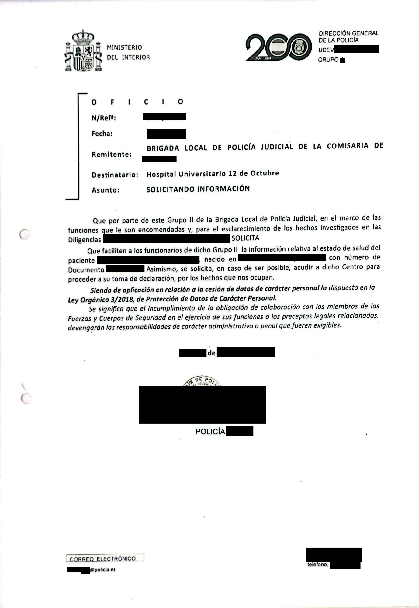
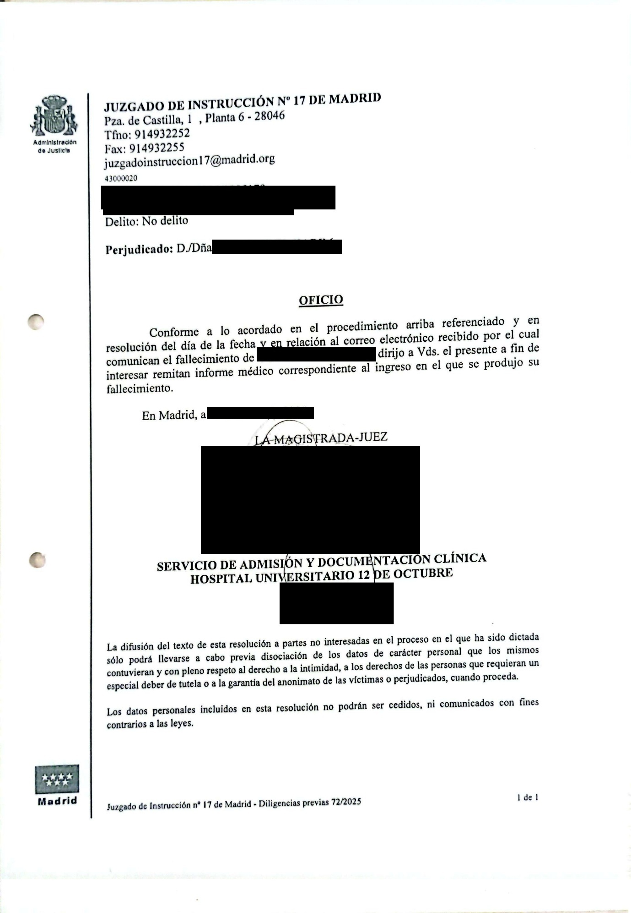

Matriz seguridad
UCI DE TRAUMA Y EMERGENCIAS |
MATRIZ ATENCIÓN INICIAL - RELACIÓN CON FUERZAS SEGURIDAD. ENTREGA DE INFORMES |
VERSIÓN 1 |
Fecha publicación: Mayo 2025 Fecha prevista actualización: Mayo 2027 Autoresas: Rocío García Adrián Marcos Ara Murillo |
||
| Hoja 1 de 2 |

| OBJETIVOS | ||||||||
|
||||||||
| CRITERIOS DE INCLUSIÓN Y EXCLUSIÓN (quién) | ||||||||
|
||||||||
| DEFINICIÓN | ||||||||
Fuerzas de la seguridad: referido a miembros correctamente identificados de cualquier cuerpo de seguridad, como policía municipal, policía nacional, policía científica, guardia civil, seguridad del hospital, militares, u otros. Paciente detenido: paciente privado de libertad por el suceso actual relacionado con el ingreso. Estará vigilado presencialmente por las fuerzas de seguridad, habitualmente policía. Paciente preso: paciente privado de libertad por un suceso previo, proveniente de un centro penitenciario, que ha ingresado en el hospital por otro motivo. Estará vigilado presencialmente por las fuerzas de seguridad, habitualmente policía. Paciente custodiado: la definición está menos clara. Paciente que está siendo vigilado por las fuerzas de seguridad pero por razones preventivas, habitualmente prevención de daños hacia de otros hacia él mismo, o del propio paciente hacia el personal. |
||||||||
| DESARROLLO | ||||||||
CASO 1. Solicitud firma documento custodia por parte de las fuerzas de seguridad El servicio de Laboratorio / Análisis Clínicos / Bioquímica es el responsable de la conservación y custodia de algunas muestras (etanol). Por lo tanto, la firma de dicha custodia será realizada por algún facultativo de ese servicio. Ante solicitud de firma que certifique custodia o solicite entrega de muestras (ejemplos en los Anexos I y II), se le remitirá a los miembros de las fuerzas de seguridad a la zona de laboratorio, tanto en horario laboral como en horario de guardia, para obtener dicha firma. Se seguirán los pasos 1 y 2.
CASO 2. Solicitud de información por parte de las fuerzas de seguridad Llamada telefónica solicitando información: No se informará telefónicamente a las fuerzas de seguridad, para garantizar la privacidad de los pacientes, ya que no podremos asegurar al 100% la identidad del interlocutor. Solicitud de información verbal, de cuerpo presente: Si miembros de las fuerzas de seguridad, correctamente identificados, solicitan información sobre un paciente custodiado, detenido o preso, se les responderá con la información pertinente. Es decir, grave / no grave, si está en condiciones para ser entrevistado por ellos, y si se plantea un alta próxima. La solicitud de información sobre pacientes no custodiados, detenidos ni presos, se puede resolver de forma similar es decir sólo con información básica: grave / no grave, en condiciones para ser entrevistado o no. Si solicitan audiencia con el paciente, ésta se otorgará si el paciente consiente a la misma. Si solicita más información o con mayor detalle, sólo se les concederá si aportan un documento oficial, como por ejemplo el que se aporta en el Anexo III. CASO 3. Solicitud de entrega de informe médico Por parte de agente de la seguridad: Sólo se entregará un informe médico o parte de lesiones a un miembro de las fuerzas de seguridad, si éste está acompañado de un documento oficial (Oficio Judicial) solicitando dicho informe. Ver ejemplo de dicho documento en Anexo IV. Por parte de familiar: Si el paciente está consciente y capaz, se le podrá entregar un informe (parte de lesiones, informe provisional o definitivo) si éste lo solicita para sí mismo o un familiar cercano. En los casos en los que el paciente está inconsciente y solicite un informe un familiar directo para trámites:
CASO 4. Paciente detenido, preso, o custodiado Mientras un paciente esté detenido o preso, se deberán seguir un procedimiento que incluya las siguientes normas, consultando cuando sea necesario con las fuerzas de seguridad.
Mientras un paciente está custodiado, se deberá mantener una conversación con la policía u otras fuerzas de seguridad para adaptar las medidas a cada caso. No siempre estará claro si la custodia es para la propia protección del paciente o hasta que una resolución final del juez determine si es necesaria la detención.
CASO 5. Llegada de helicóptero a helipuerto de edificio de Urgencias Cuando se curse un preaviso de ingreso de pacientes por transporte aéreo: La TCAE A de ingreso se encargará de avisar a seguridad (interfono 45 3555) para confirmar que tienen constancia y que suben para apertura del helipuerto. En su defecto, el médico adjunto de busca o de guardia será quien avise a Seguridad. Si se detecta la llegada de un helicóptero sin preaviso, también se avisará a Seguridad. Esta norma se cumplirá ya sea por un paciente con destino UCITE, o cualquier otro destino. Teléfono seguridad: 45 3555 RESUMEN PERTENENCIAS CUSTODIADAS PACIENTE
|
||||||||
| REFERENTE/S | ||||||||
Adrián Marcos Morales Mª del Ara Murillo Pérez Rocío García Martín |
||||||||
| REFERENCIAS | ||||||||
|
DESCRIPCIÓN DE LAS MODIFICACIONES DEL PROTOCOLO
| FECHA | DESCRIPCIÓN DE LAS MODIFICACIONES DEL PROTOCOLO |
| Otoño 2025 | Enviar a Asesoría jurídicia y jefe de seguridad para revisión |
ANEXOS
ANEXO 1 – Ejemplo 1 de documento de solicitud de custodia muestra
ANEXO II – Ejemplo 2 de documento de solicitud de custodia muestra
ANEXO III – Ejemplo de documento de solicitud de información verbal

ANEXO IV – Ejemplo de documento de solicitud de informe escrito
